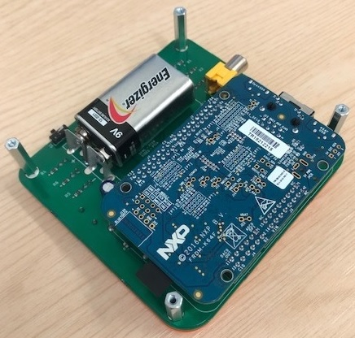

Using C++, I successfully managed to make the Flappy Birds game on the K64F development board. The board consisted of an ARM Cortex-M4 core, along with Flash, RAM and other peripherals like an LCD (Nokia 5110), buttons, LEDs etc. The project contained various classes for the bird, the LCD, the obstacles, the menu and the game engine. Additionally, I decided to add my own twist to the game by introducing viruses (small particles in the game that kills the bird).

Challenges Faced
Project looked too complex at start - making the Flappy Bird game would be quite challenging, expecially on an embedded device (limited support for libraries). I began with a simple version of the game where I created the bitmap of the bird and all it did as fly from the left of the screen to the right. This was simple and only included a few classes. After doing the basics, I kept adding complexity to the game until I had a close resemblance to the original game.
Debugging - debugging a game developed on an embedded device was not very easy (printing simple lines of text also required relatively long code). For this reason, after adding a feature to the game, it was checked to see if it performed as intended. If not, it was quite simple to identify where the error occurred.
Version control - a risk of losing work meant version control would be essential. After every addition of a feature, the code would be pushed onto the repository on the MBed platform.